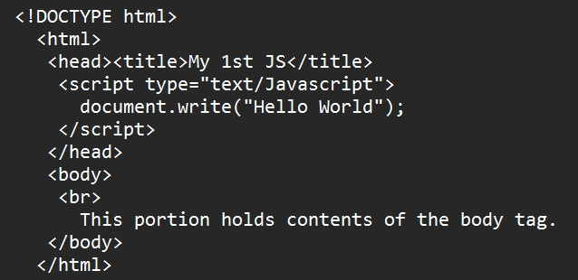

it is an interpreted language due to the fact that it requires a browser to run. JS was created to work together with HTML and requires a web browser in order to run. JS source code can easily be seen when you view the source code of a JS-enabled webpage.
scripting languages are treated like programming languages but they are normally created to perform simple repetitive tasks. They do not come with their own interfaces but they provide instructions to other programs on what to do. JS does not contain the program on how the whole webpage looks like, we can use it to change certain elements of the webpage through the browser.
there are basically two kinds of scripting for the web – client-side and server-side. The key difference between these scripts is the location to which they are executed. A server-side script is executed on the actual server machine that hosts the webpage while a client-side script is executed on the very machine that you are using.
another advantage of JS is that it presents to you many things as objects and lets you easily manipulate them. OOP is a programming style that treats every element in a system as an object. In OOP, each object has its associated functions called methods which are the things that objects know how to do.
Objects - are items that exist in the browser. The browser window, the page itself, the status bar, and the date and time stored in the browser are all objects.
Methods - are actions to be performed on or by an object. Methods also represent functions that are designed for specific purpose like doing math or parsing strings.
Properties - are an existing subsection of an object. It is also important to learn these basic concepts in programming.
Event - something which happens or which is done such as loading a page, holding a mouse over a link, or clicking a link. You can actually write scripts and set them to execute when a specific event occurs.
Parameter – data or other objects which describe the characteristics of an object.
Type - type of variable such as integer, string, floating point or Boolean.
Type Conversion - act of converting a variable from one type to another.
A script is a set of computer instructions or commands that puts together or connects existing components to accomplish a new related task. JS is a powerful scripting language used to create web functionalities. A text editor and a web browser are the tools needed in Jscripting. The basic components of JS are objects, methods and properties.
Window - the window object is the main object. Many of the window-object properties are objects in their own right such as document, frame, and location. There is no need to write the object name, window, since it is understood.
Sample:
Location - to go to a new location
Open - to open a new window
setTimeout - to set a time interval before activating an event
Document - the document object is derived from the window object. It is the container for all HTML, HEAD and BODY objects associated within the HTML tags of the HTML documents. You need to write the object name to use these methods.
Sample:
fgColor - to set the document foreground color
cookie - to read the information stored in the cookie text file
Sample (document):
write - to display a message
lastModified – to display the date it was last modified.
Math - the math object provides the capability to perform math operations.
Sample:
PI - has the value of PI
Sample (math):
pow (a,b) – takes the value of a to the power of b
max (a,b) – returns the larger value between a and b
min (a,b) – returns the smaller value between a and b
Navigator - the navigator object determines which browser is running
Sample (navigator):
appName – to determine the browser’s code name
appVersion – to determine the browser’s release version
cookieEnabled – to determine whether cookies are enabled or not
platform – a description of the operation system.

Parsing - the process of analyzing data (usually a string of text) and converting it into a structured, internal format that the JavaScript engine can understand, manipulate, and execute.
Variable - is a symbolic representation denoting a quantity or expression.
- It represents a place where a quantity can be stored. It is a value hat has the property being associated with another value.
- Container that contains a value, which can change as required.
Some of the data types that a JS variable may contain:
Variables are declared with a var statement. It is always good practice to pre-define your variables using var. If you declare a variable inside a function, it can be accessed anywhere within the function.
Examples in declaring a variable:
//declaring one variable – var firstname
//declaring several variables – var firstname, lastname;
//declaring one variable and assigning a value – var firstname="Crispin";
//declaring several variables and assigning a valuevar firstname="Basilio", lastname="Santiago"